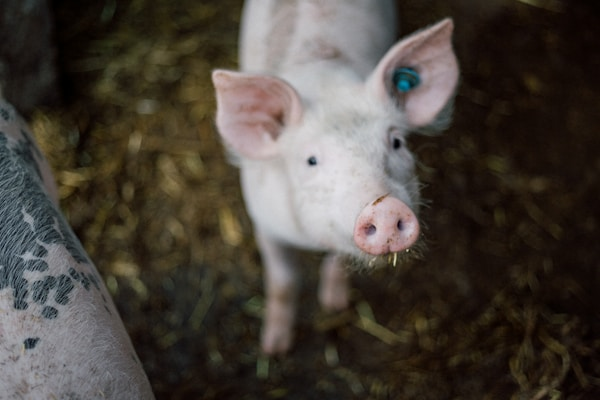
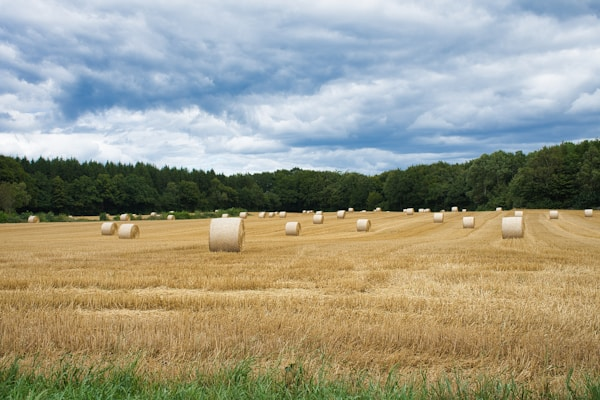
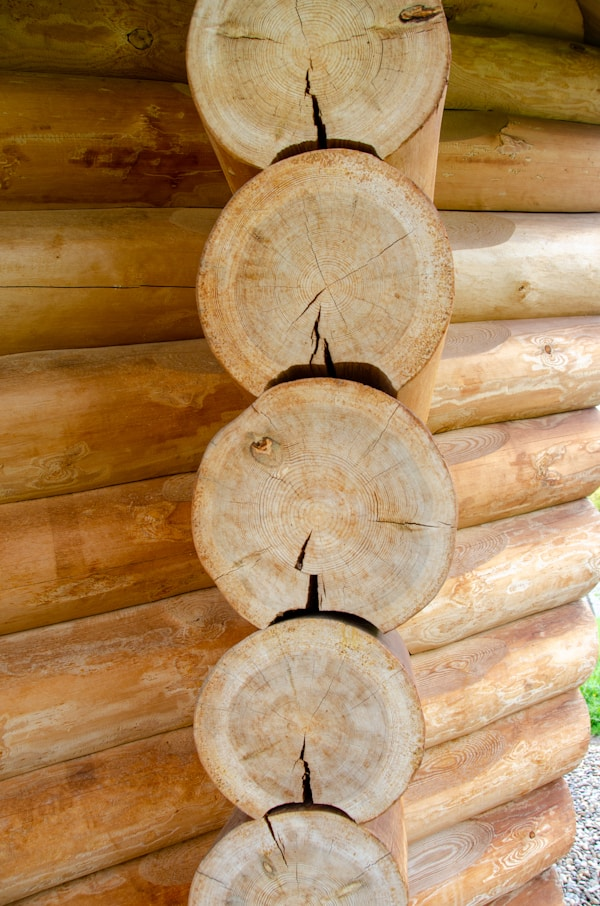
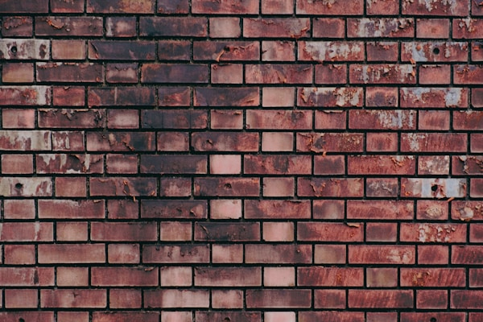
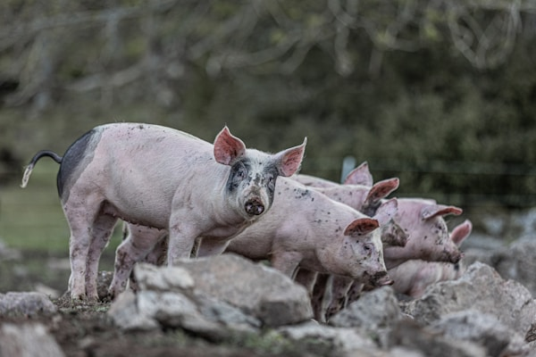

Un cuento clásico sobre tres hermanos cerditos y el lobo feroz.

El primer cerdito decidió construir su casa de paja. "¡Será rápido y fácil!", pensó. En pocas horas, su casa estaba terminada.
Pero pronto llegó el lobo feroz. "¡Soplaré y soplaré, y tu casa derribaré!", gritó el lobo. Y con un gran soplido, la casa de paja voló por los aires.
El segundo cerdito construyó su casa con madera. Trabajó más que su hermano, clavando las tablas con cuidado.
El lobo apareció y sopló: "¡Soplaré y soplaré, y tu casa derribaré!". Con un soplido más fuerte, la casa de madera se derrumbó.


El tercer cerdito construyó su casa de ladrillos. Tardó muchos días, colocando cada ladrillo con esmero.
El lobo sopló y sopló hasta quedarse sin aliento, pero la casa de ladrillos no se movió ni un centímetro. El lobo tuvo que marcharse derrotado.
Los tres cerditos celebraron su victoria. Los hermanos menores aprendieron que el trabajo duro vale la pena.
Construyeron dos casas más de ladrillo y vivieron seguros y felices.
Y colorín colorado, este cuento se ha acabado.
